ARC RAIDERS COMPANION / GRAFICKÁ STUDIE
Ops. Průzkumník na ploše.
Dvě varianty vlastní postavy Bedňák B. Vysoká anténa, boční průzkumná čočka, meruňkové oči a teplý grafit. Bez převzaté herní grafiky.
Skutečné velikosti · bez vyhlazování · návrhy zatím nejsou nasazené v aplikaci
V1 · Tmavý podklad / velikosti 1 : 1
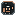
16 × 16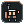
24 × 24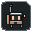
32 × 32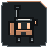
48 × 48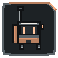
64 × 64128 × 128256 × 256Windows / kontextové makety
ARC Raiders Companion— □ ×
Připnuto ve Startu
Grafitová dlaždice, průhledné rohy
⊞Hledat⌃ 14:35
14:35 Tray bez dlaždice / světlá kontura
V1 · Světlý podklad / velikosti 1 : 1
16 × 1624 × 2432 × 3248 × 4864 × 64128 × 128256 × 256
Windows / kontextové makety
ARC Raiders Companion— □ ×
Připnuto ve Startu
Grafitová dlaždice, průhledné rohy
⊞Hledat⌃ 14:35
14:35 Tray bez dlaždice / tmavá kontura
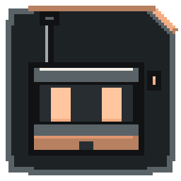
VARIANTA 02
Tvář průzkumníka
Větší hledí a oči, anténa i samostatná čočka. Doporučená hlavní ikona pro lepší čitelnost v malých velikostech.
Originál 1024 × 1024 · Windows ICO
V2 · Tmavý podklad / velikosti 1 : 1
16 × 16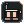
24 × 24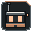
32 × 32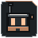
48 × 4864 × 64128 × 128256 × 256 Windows / kontextové makety
ARC Raiders Companion— □ ×
Připnuto ve Startu
Grafitová dlaždice, průhledné rohy
⊞Hledat⌃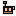
14:35 Tray bez dlaždice / světlá kontura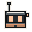
V2 · Světlý podklad / velikosti 1 : 1
16 × 1624 × 2432 × 3248 × 4864 × 64128 × 128256 × 256
Windows / kontextové makety
ARC Raiders Companion— □ ×
Připnuto ve Startu
Grafitová dlaždice, průhledné rohy
⊞Hledat⌃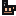
14:35 Tray bez dlaždice / tmavá kontura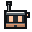
Doporučení: V2
V2 má větší plochu očí a hledí při 16–32 px. V1 lépe vypráví, kdo je Ops: malý průzkumník s batohem. Tray používá v obou sadách stejnou čitelnou hlavu průzkumníka.
16, 24, 32, 48 a 64 px mají vlastní celočíselnou konstrukci. Exporty 128, 256 a 1024 px zvětšují kresbu 64 px metodou nejbližšího souseda. Makety nejsou screenshoty nativního Windows.